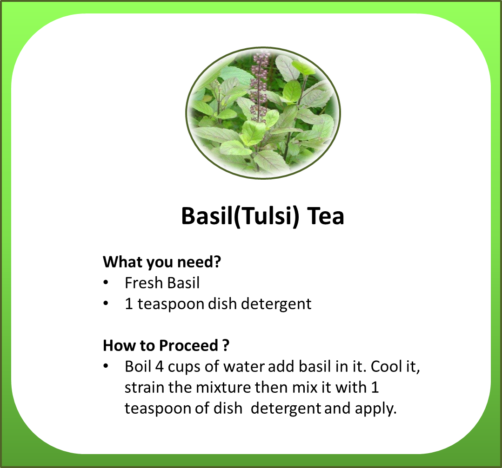
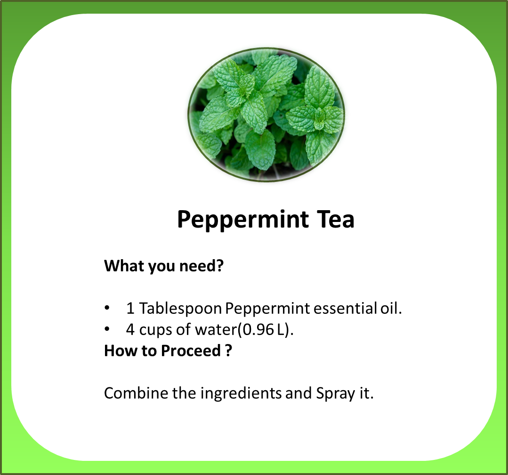
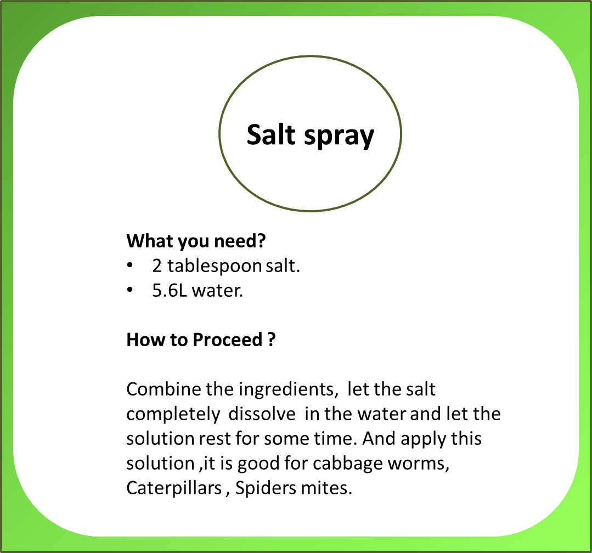
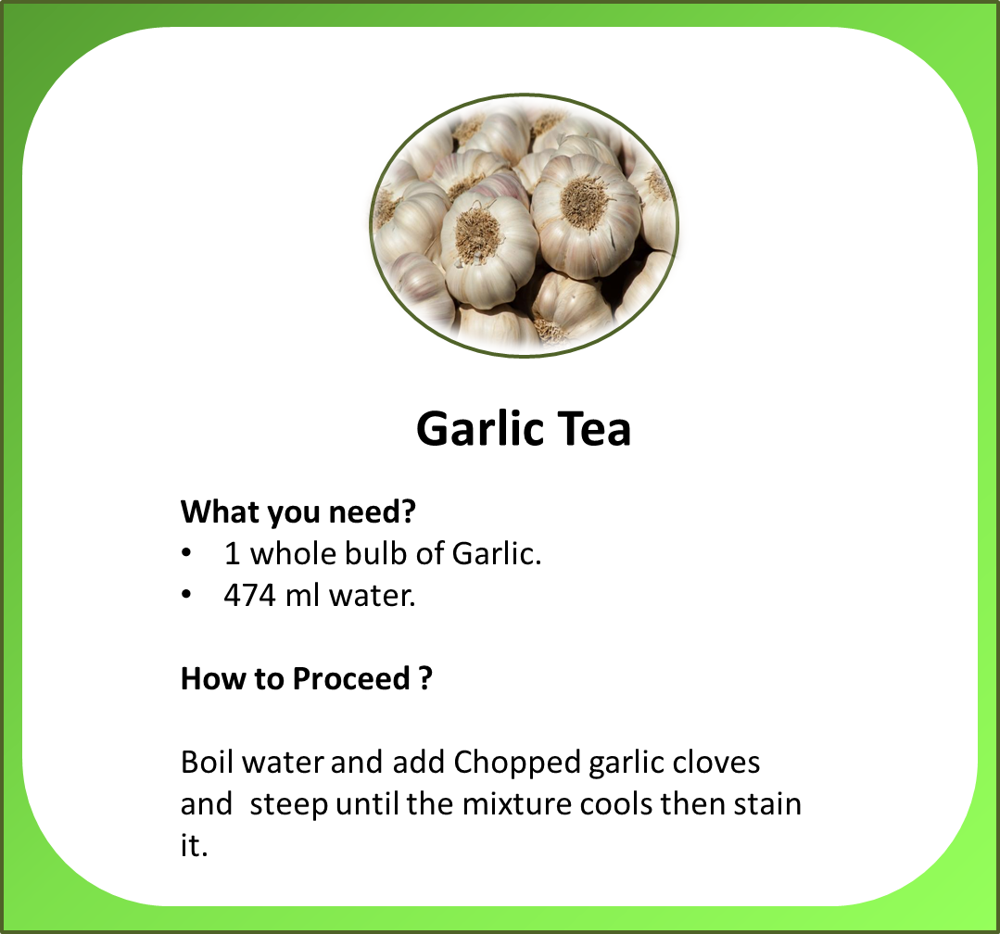

Pesticides
As the fertilizers take care of the soil and it's fertility also take care of the plant's growth. There come's the another crutial factor in farming called "Pesticides".
there are some of the Pesticides which can be prepared at home or you can go for the online shopping option.
you can also browse on Amazon for Organic Pesticides.
Check it on Amazon
Points to Remember
1. Read the instuctions carefully.
2. Do not over doase.
Here are the few Organic Pesticides that can be prepared at home.



